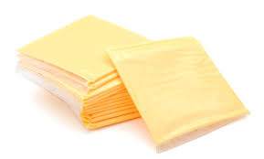
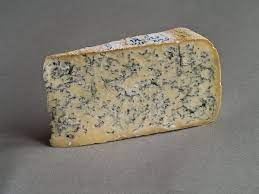
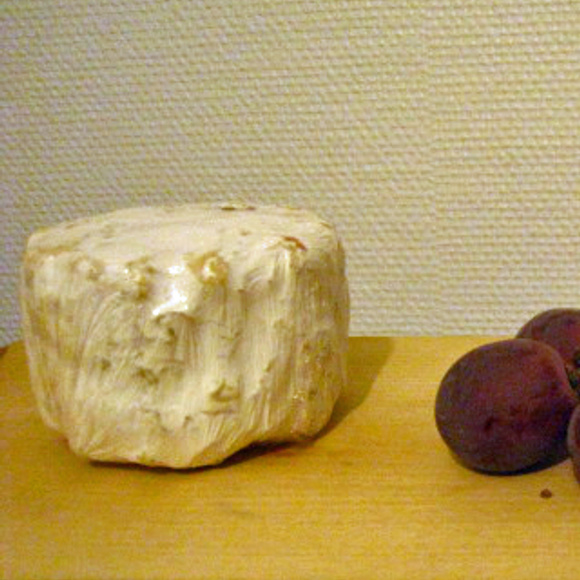
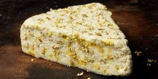

American Cheese
Modern American cheese is a type of processed cheese developed in the 1910s made from cheddar, Colby, or similar cheeses.
It is mild with a creamy and salty flavor, has a medium-firm consistency, and has a low melting point.
It is typically yellow or white in color;
yellow American cheese is seasoned and colored with annatto.
|

Cheddar Cheese
Cheddar cheese (or simply cheddar) is a relatively hard, off-white (or orange if colourings such as annatto are added),
sometimes sharp-tasting, natural cheese.
Cheddar originates from the English village of Cheddar in Somerset.
|

Mozzarella Cheese
Mozzarella is a southern Italian cheese traditionally made from Italian buffalo's milk by the pasta filata method.
|

Blue Cheese
Bleu de Gex (also Bleu du Haut-Jura or Bleu de Septmoncel) is a creamy,
semi-soft blue cheese made from unpasteurized milk in the Jura region of France.
|

Moose Cheese
Moose cheese is cheese created from moose milk.
Varieties of moose cheese are produced in Sweden by Christer and Ulla Johansson at their location called
"Moose House" or "Elk House". Three varieties of moose cheese are produced.
|

Stilton Cheese
Stilton is an English cheese, produced in two varieties:
Blue, which has Penicillium roqueforti added to generate a characteristic smell and taste, and White,
which does not. Both have been granted the status of a protected designation of origin (PDO)
by the European Commission, requiring that only such cheese produced in the three counties of Derbyshire,
Leicestershire and Nottinghamshire may be called Stilton. The cheese takes its name from the village of Stilton,
now in Cambridgeshire, where it has long been sold.
|